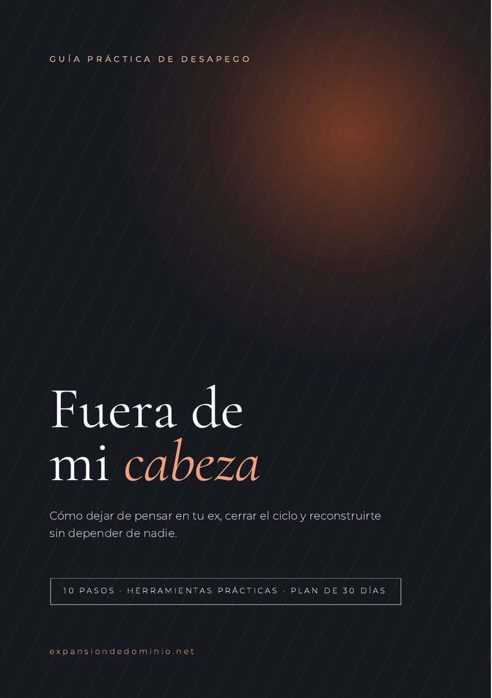

Se terminó.
Pero sigue en tu cabeza.
Cómo dejar de pensar en tu ex, cerrar el ciclo y reconstruirte sin depender de nadie.

- Es lo primero que piensas al despertar.
- Revisas sus redes o su última conexión "solo un momento".
- Le sigues hablando en tu cabeza: le explicas, le reclamas, le ganas la discusión.
- Sabes que estás mejor así… y aun así no logras soltar.
- Comparas a cada persona nueva con tu ex.
No es amor. Es un circuito.
Tu mente se quedó enganchada a una historia
No hay nada roto en ti ni es falta de carácter. Esta guía no te va a pedir que "sueltes con amor" ni que repitas frases bonitas frente al espejo. Te pide algo más concreto: entender qué te ata, cortar lo que lo alimenta y construir algo que ocupe ese lugar.
El objetivo no es olvidar a esa persona. Es que su recuerdo deje de tener poder sobre tus decisiones.
Una guía para salir, no para entretenerte
- Las tres fases de una ruptura, para saber en qué punto estás y qué trampa evitar en cada una.
- 10 pasos que explican por qué pasa lo que sientes y qué hacer al respecto.
- Reglas de contacto cero, y qué hacer cuando no puedes cortar del todo (hijos, trabajo, amigos en común).
- Técnicas para apagar la conversación imaginaria.
- Un plan de acción de 30 días.
- Una guía de emergencia para las noches difíciles.
- 49 páginas en PDF.
Las tres fases
La protesta
La mente se niega a aceptar la pérdida e intenta revertirla.
El bajón
La mente acepta que no hay vuelta atrás y se detiene a procesar.
El desapego
La energía vuelve a ti y el recuerdo pierde temperatura.
Los 10 pasos
Encuentra el ancla
No extrañas solo a una persona: extrañas cómo te sentías.
No fue destino, fue momento
Llegó en el momento justo, que no es lo mismo que ser la persona correcta.
Limpia tu territorio
Cada objeto, canción o rutina compartida es un interruptor.
Cierra las puertas traseras
Puedes bloquear a alguien y seguir sabiendo todo de su vida.
Apaga la conversación imaginaria
Ya no hablan, pero tú le sigues hablando en tu cabeza.
Distancia consciente
Alejarte no es castigar: es dejar de invertir donde no hay retorno.
Tu valor no vive en su mirada
Una autoestima prestada te la pueden quitar en cualquier momento.
Derriba el pedestal
Lo intenso no siempre es lo más profundo.
Construye tu propio eje
Si cortas todo pero no construyes nada, el vacío vuelve a llamar.
Convierte la historia en lección
El error más caro es salir sin aprender nada.
Mira por dentro
Páginas reales de la guía. Toca una para verla en grande.
Lee un fragmento
Cuando llegue la tentación
1. Espera 20 minutos antes de hacer nada. La mayoría de los impulsos bajan solos, como una ola.
2. Escribe el mensaje en tus notas, nunca en el chat. Léelo al día siguiente.
3. Llama a tu persona de apoyo: alguien que sepa que estás en este proceso.
"Una recaída es información, no un fracaso."
Pago seguro y acceso inmediato a través de Hotmart · Garantía de 7 días.
- Estás pasando por una ruptura, reciente o no tanto.
- Ya pasó tiempo y no entiendes por qué sigue ocupando tanto espacio.
- Quieres pasos concretos, no frases bonitas.
- Quieres cerrar el ciclo sin esperar nada de la otra persona.
- Buscas técnicas para recuperar a tu ex.
- Quieres que la otra persona se arrepienta o se dé cuenta de lo que perdió.
Antes de empezar
¿En qué formato viene?
En PDF de 49 páginas, para leer en el móvil, la tableta o el ordenador.
¿Cómo la recibo?
Al comprar, Hotmart te envía el acceso a tu correo de inmediato.
¿Sirve si la ruptura fue hace tiempo?
Sí. La guía empieza por las tres fases de una ruptura para que identifiques en qué punto estás, sea reciente o haya pasado tiempo.
¿Y si no puedo cortar el contacto del todo?
El paso 6 tiene una parte dedicada a eso: cómo manejar el contacto mínimo cuando hay hijos en común, trabajan juntos o comparten un círculo cercano.
¿Tiene garantía?
Sí. La compra a través de Hotmart incluye un periodo de garantía de 7 días.
¿Sustituye a un psicólogo?
No. Es material de crecimiento personal. Si sientes una tristeza que no se va, ansiedad que te impide funcionar o pensamientos de hacerte daño, busca ayuda profesional.
Sanar no es dejar de sentir.
Es dejar de obedecer lo que sientes.